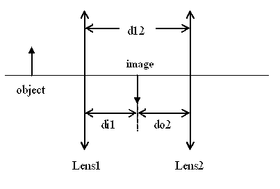

When light passes through two lenses, you can apply the lens equation
to the first lens alone, and then treat the image formed by the first
lens as the object for the second lens, as shown below. Because the
sum of the image distance for the first lens (di1) and the object distance
for the second lens (do2) must equal the distance between the lenses (di12),
the object distance for the second lens is given as:
do2 = d12 - di1

This equation will work no matter where the image is formed, as long as the
sign conventions
for the relevant quantities are observed.